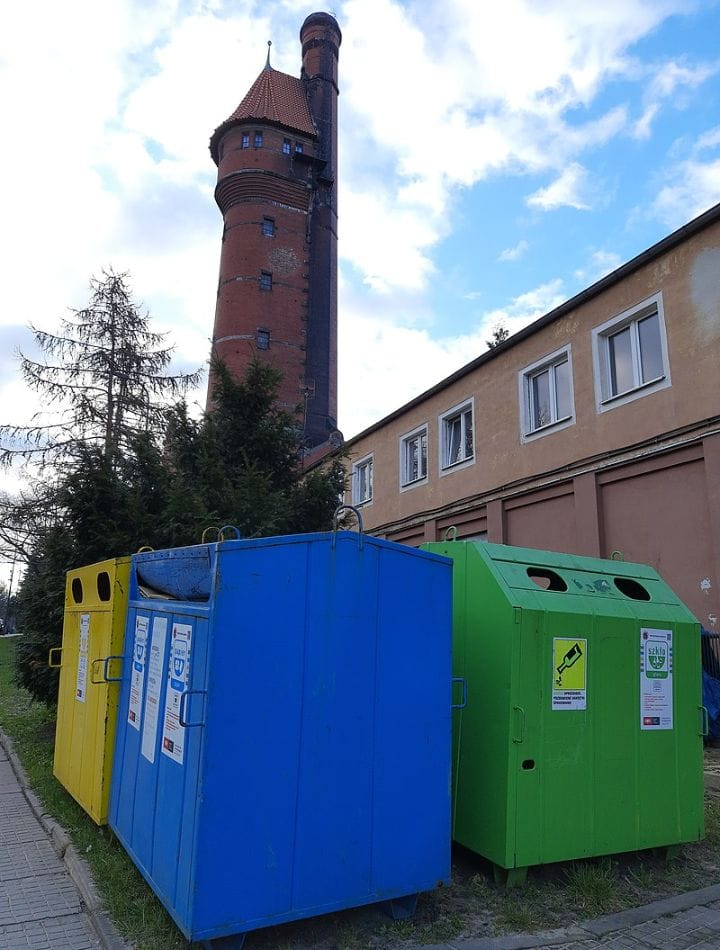

1. Waste management: Health impact and environmental challenges
Waste can either be solid, liquid, or gases and each type has different methods of disposal and management. Waste management deals with all types of waste, including industrial, biological, household, municipal, organic, biomedical, radioactive wastes.
...
In some cases, waste can pose a threat to human health. Health issues are associated with the entire process of waste management. Health issues can also arise indirectly or directly: directly through the handling of solid waste, and indirectly through the consumption of water, soil, and food. Waste is produced by human activity, for example, the extraction and processing of raw materials. Waste management is intended to reduce the adverse effects of waste on human health, the environment, planetary resources, and aesthetics. The aim of waste management is to reduce the dangerous effects of such waste on the environment and human health. A big part of waste management deals with municipal solid waste, which is created by industrial, commercial, and household activity.
Waste management practices are not the same across countries (developed and developing nations); regions (urban and rural areas), and residential and industrial sectors can all take different approaches.

2. The Use of Waste Materials in the Construction Industry
Waste materials are a major environmental problem, which is a threat to the environment. It is important to reuse these materials and dispose of them. Waste can be used in the construction industry in two ways: by reusing (reuse components) and recycling (processing waste into raw materials used in the production of building materials).
...
The paper presents my own research using substrates resulting from the processing of waste: foam glass and high-impact polystyrene and the possibility of their use as modifiers composition of basic construction materials. Glass foam is made from glass cullet. It has many advantages, positive effect on the adsorption of sound and workability. Due to the spherical shape and low density it is used as an ultra-light filler. The second addition is High Impact Polystyrene (High Impact Polystyrene - HIPS for short) which is a butadiene rubber modified polystyrene. With the change amount of the rubber mechanical and physical properties of the material are also changed, for example, by increasing the toughness of HIPS. The article presents a critical review of the literature on changes in the composition of traditional building materials on the example of cellular concrete, cement and products of sand - lime. The paper presents my own research and detailed analysis of them.
3. Trends and Insights in Construction and Demolition Waste Management: A Bibliometric Analysis
Construction and demolition waste treatment has become an increasingly pressing economic, social, and environmental concern across the world. This study employs a science mapping approach to provide a thorough and systematic examination of the literature on waste management research.
...
This study identifies the most significant journals, authors, publications, keywords, and active countries using bibliometric and scientometric analysis. The search retrieved 895 publications from the Scopus database between 2001 and 2021. The findings reveal that the annual number of publications has risen from less than 15 in 2006 to more than 100 in 2020 and 2021. The results declare that the papers originated in 80 countries and were published in 213 journals. Review, urbanization, resource recovery, waste recycling, and environmental assessment are the top five keywords. Estimation and quantification, comprehensive analysis and assessment, environmental impacts, performance and behavior tests, management plan, diversion practices, and emerging technologies are the key emerging research topics. To identify research gaps and propose a framework for future research studies, an in-depth qualitative analysis is performed. This study serves as a multi-disciplinary reference for researchers and practitioners to relate current study areas to future trends by presenting a broad picture of the latest research in this field.